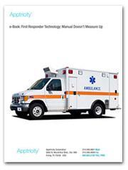

| Out of the Dark | The Affordable Care Act | Prescription for Healthcare IT |
|---|---|---|
|
How Today's Transportation Management Software Transforms ‘Just-In-Case’ into Command Visibility. |
Welcome to the employer mandate, a portion of the Affordable Care Act (ACA) that represents a seismic shift for employers providing health insurance to their employees. |
Today's organizations are facing increasing pressure to maximize services while minimizing costs, prompting rising interest in streamlining non value-added processes. |
| Read More | Read More | Read More |
| Four Factors When Adopting Automated Solutions | Automating the Procurement Process | Bettering Spend Management with Shared Services |

Many companies have found that reaching the promised land of increased profit through transparency a pipe dream, often because the partner it chose did not possess one or more key qualities... |
With businesses constantly searching for ways to become faster and more streamlined, many are turning to automation solutions like Electronic Procurement to help boost the bottom line. |
In this e-Book we will cover tips and guidelines for organizations considering a shared services model. Also, we will discuss the impact of shared service centers on IT and deployment options. |
| Read More | Read More | Read More |
| Enterprise Cloud Computing | First Responder Technology | Higher Education I.T. 101 |
|
The benefits of deploying cloud-based solutions are well established by now, with speed and cost effectiveness generally being the primary motivators for purchase. |

By automating certain functions, utilizing mobile devices like smartphones and tablets, and taking advantage of Big Data, virtually all organizations can improve their processes and therefore drive operational success. |
Just as enterprises look to technology to help optimize operations, institutions of higher education can benefit from implementing certain automation solutions and taking advantage of some of the capabilities technology provides. |
| Read More | Read More | Read More |
| Jetstream for Aviation | Supply Chain Management | The Mobile Enterprise |
|
Keeping track of maintenance schedules is no easy task. Not to mention the difficulty in maintaining an accurate historical log of the service and repairs for each asset. This is why... |
A business is only as successful as its supply chain, so whether the issues lie with mismanaged warehouse processes, inadequately tracked fleets, scattered inventory, lackluster transportation management, or some other supply... |
Smartphones, tablets and tailored applications are quickly becoming integral to business operations while offering the flexibility and responsiveness that eludes companies that are tethered to their paper based operations and business... |
| Read More | Read More | Read More |